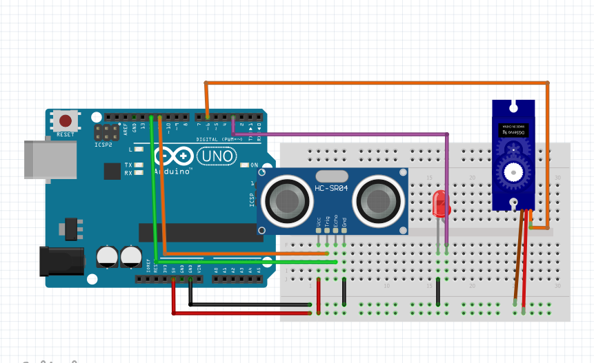

SMART DUSTBIN SYSTEM TUTORIAL
Overview
The SMART DUSTBIN SYSTEM is a simple and efficient project that uses an ultrasonic sensor and a servo motor to automatically open a dustbin lid when someone approaches it. This project is a great way to introduce students to basic electronics, programming with Arduino, and the use of sensors and actuators.
Components Required
- Arduino UNO (or any compatible board)
- Ultrasonic Sensor (HC-SR04)
- Servo Motor (SG90)
- Breadboard
- Jumper Wires
- USB Cable for Arduino
- Dustbin model or prototype with a movable lid
Circuit Diagram
Below is the basic wiring setup for this project:
- Ultrasonic Sensor (HC-SR04)
- VCC to 5V on Arduino
- GND to GND on Arduino
- Trig Pin to Digital Pin 11 on Arduino
- Echo Pin to Digital Pin 12 on Arduino
- Servo Motor (SG90)
- VCC (Red Wire) to 5V on Arduino
- GND (Brown Wire) to GND on Arduino
- Signal (Orange Wire) to Digital Pin 6 on Arduino
Code Explanation
The code you’ll be using for this project is written in Arduino's programming language, which is a simplified version of C/C++. Below is the step-by-step breakdown of the code:
#include<Servo.h>
Servo a;
int trigPin = 11; // Trigger
int echoPin = 12; // Echo
long duration, cm, inches;
void setup() {
//Serial Port begin
Serial.begin (9600);
//Define inputs and outputs
pinMode(trigPin, OUTPUT);
pinMode(echoPin, INPUT);
a.attach(6);
}
void loop() {
// The sensor is triggered by a HIGH pulse of 10 or more microseconds.
// Give a short LOW pulse beforehand to ensure a clean HIGH pulse:
digitalWrite(trigPin, LOW);
delayMicroseconds(5);
digitalWrite(trigPin, HIGH);
delayMicroseconds(10);
digitalWrite(trigPin, LOW);
// Read the signal from the sensor: a HIGH pulse whose
// duration is the time (in microseconds) from the sending
// of the ping to the reception of its echo off of an object.
pinMode(echoPin, INPUT);
duration = pulseIn(echoPin, HIGH);
// Convert the time into a distance
cm = (duration/2) / 29.1; // Divide by 29.1 or multiply by 0.0343
inches = (duration/2) / 74; // Divide by 74 or multiply by 0.0135
Serial.print(inches);
Serial.print("in, ");
Serial.print(cm);
Serial.print("cm");
Serial.println();
delay(250);
if (cm<=10){
a.write(180);
}
else {
a.write(0);
}
delay(100);
}

How It Works
- Ultrasonic Sensor: The ultrasonic sensor sends out a sound wave at a frequency that is beyond the human hearing range. When the sound wave hits an object, it bounces back to the sensor. The time taken for the wave to return is measured and used to calculate the distance between the sensor and the object.
- Servo Motor: The servo motor is used to move the dustbin lid. Depending on the distance measured by the ultrasonic sensor, the servo motor will either open or close the lid.
- Distance Calculation: The distance is calculated by using the formula:
Distance=Time×Speed of Sound2\text{Distance} = \frac{\text{Time} \times \text{Speed of Sound}}{2}Distance=2Time×Speed of Sound
In this case, the speed of sound is approximately 34300 cm/s. - Lid Movement: When the distance between the sensor and the object is less than or equal to 10 cm, the lid opens (servo rotates to 180 degrees). When the object moves away, the lid closes (servo rotates back to 0 degrees).
Testing and Debugging
- Upload the code to your Arduino board.
- Open the Serial Monitor (Ctrl + Shift + M) to observe the distance readings.
- Place your hand or any object in front of the ultrasonic sensor. The lid should open when the object is close enough and close when it moves away.
- If the lid doesn’t move, check your connections, particularly the wiring of the servo motor and ultrasonic sensor.
Applications
- This project can be scaled up for real-world dustbins to promote hygiene.
- It can be used in public places where automatic systems reduce the need for human interaction, hence lowering the risk of contamination.
Conclusion
The SMART DUSTBIN SYSTEM is an excellent project to learn about sensors, actuators, and basic automation. With some creativity, it can be extended and improved upon for more complex applications.